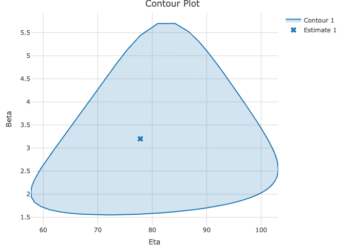
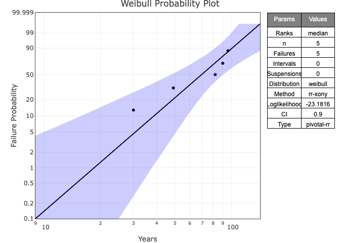
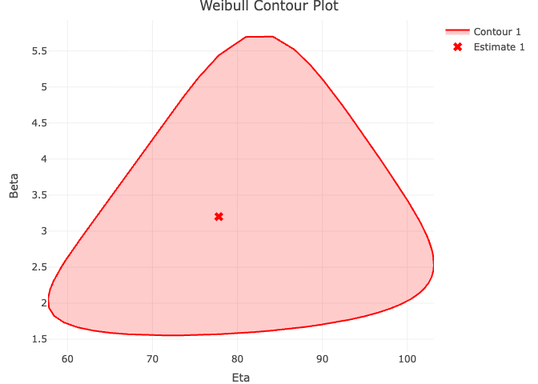

Build interactive Weibull Probability Plots with WeibullR, an R package for Weibull analysis, and plotly, an interactive web-based graphing library.
Getting Started
To install WeibullR.plotly in R:
install.packages('WeibullR.plotly')Or install the development version:
devtools::install_github('paulgovan/weibullr.plotly')Basic Examples
To build a probability plot, first fit a wblr object using the WeibullR package and then use plotly_wblr to build the plot.
library(WeibullR)
library(WeibullR.plotly)
failures<-c(30, 49, 82, 90, 96)
obj<-wblr.conf(wblr.fit(wblr(failures)))
plotly_wblr(obj)
To build a contour plot, use the plotly_contour function. Note that contour plots are only available where method.fit='mle' and method.conf='lrb'.
obj<-wblr.conf(wblr.fit(wblr(failures), method.fit = 'mle'), method.conf = 'lrb')
plotly_contour(obj)
Customization
WeibullR.plotly has several customization options.
plotly_wblr(obj, main='Weibull Probability Plot', xlab='Years', ylab='Failure Probability', col='blue', signif=4, grid=FALSE)
plotly_contour(obj, main='Weibull Contour Plot', col='red', signif=4, grid=FALSE)
More Resources
For an interactive introduction to Life Data Analysis, check out WeibullR.learnr
To try WeibullR.plotly in a Shiny app, check out WeibullR.shiny